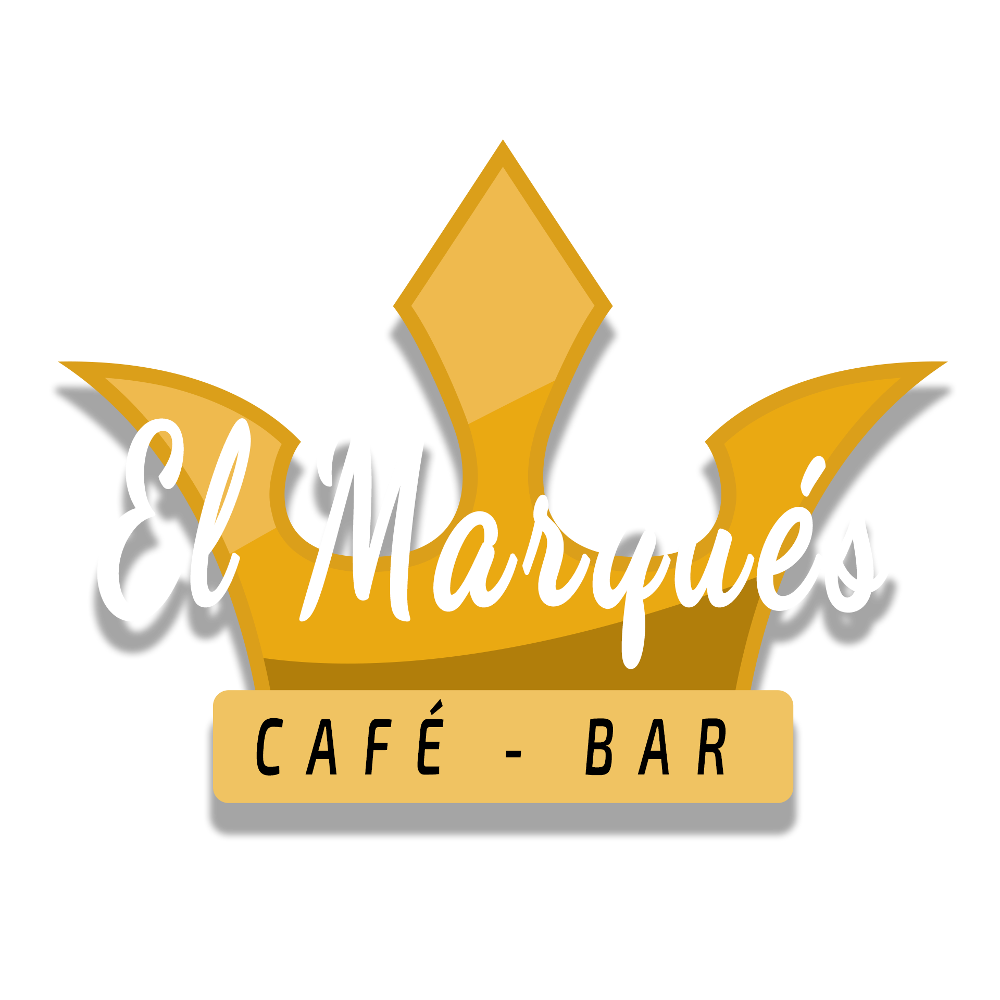
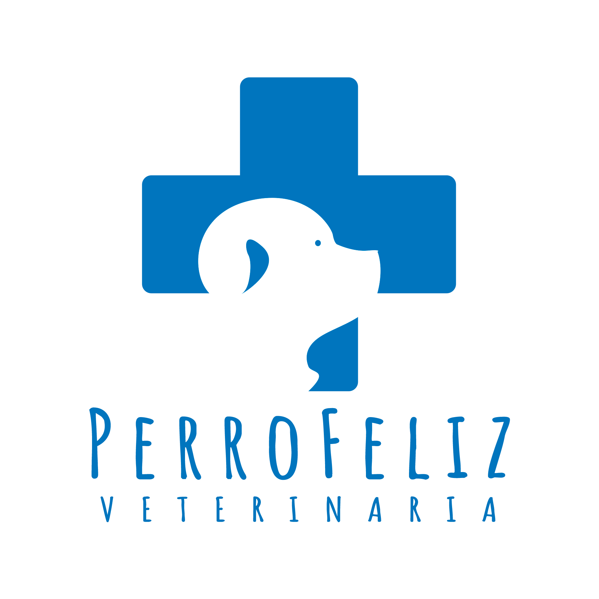

Invitacion para boda
Diseño de una tarjeta de invitación para un matrimonio en formato web. El objetivo principal del proyecto fue reflejar la elegancia y estilo que caracterizan al evento. Además, se incluyó la opción de confirmar la asistencia al mismo, brindando una herramienta práctica para la organización del acontecimiento. Click aqui para visitar la web.

El Marqués Bar Café
Diseño y desarrollo de una carta de presentación virtual para un establecimiento gastronómico de tipo bar-café. La implementación de esta carta se realizó utilizando el framework de Django, lo que permite a los propietarios del negocio agregar, modificar y eliminar los distintos platos y productos que ofrecen a sus clientes. Click aqui para visitar la web.
Justice League
Trabajo Práctico desarrollado en el ámbito académico, específicamente para la Universidad Nacional de Jujuy. El trabajo consistió en el diseño y desarrollo de una tienda virtual ficticia mediante el uso del framework Django. La tienda ha sido bautizada como "Justice League" y se especializa en la venta de videojuegos. Click aqui para visitar la web.

Veterinaria PerroFeliz
Trabajo Práctico desarrollado en el ámbito académico, específicamente para la Universidad Nacional de Jujuy. El trabajo consistió en el diseño y desarrollo de una web ficticia, utilizando unicamente HTML, CSS y JavaScript. La web pertenece a una veterinaria llamada PerroFeliz que ofrece servicios veterinarios y acicalamiento para caninos. Click aqui para visitar la web.

Portfolio Web
Portfolio web desarrollado y diseñado para el proyercto final del programa "Argentina Programa - #YoProgramo"